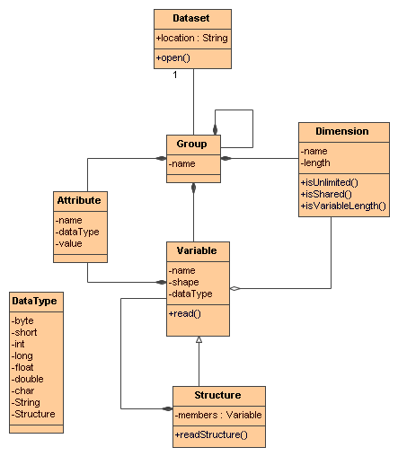

Common Data Model UML
NetCDF (version 1) Data Model
Nj22 / NetCDF-4 Common Data Model (latest)

Coordinate Systems
see
Coordinate System Object Model
Scientific Data Types
not done yet
This document is maintained by
John Caron
and was last updated on Oct 18, 2006

 This document is maintained by John Caron and was last updated on Oct 18, 2006
This document is maintained by John Caron and was last updated on Oct 18, 2006